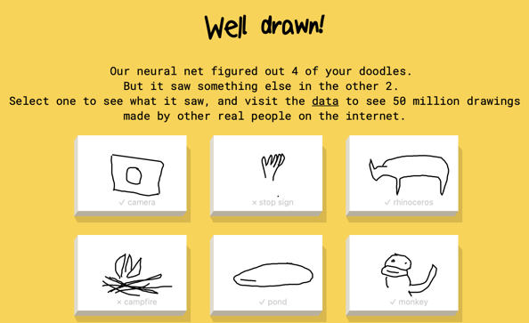

Introductie
In deze module willen we je graag verbazen met techniek, succes en ongemak rond Kunstmatige Intelligentie. We hopen natuurlijk dat je hierna niet kunt wachten om met de rest van de module te beginnen om meer te weten te komen over dit interessante en hoogst actuele onderwerp. We beginnen de verbazing met beeldherkenning voor de leuk, daarna geven we een voorbeeld van een serieuzere succesvolle toepassing en zadelen we je met ongemak op. Als laatste presenteren we het doel van de cursus.
Quickdraw

Hoeveel heb je nodig om iets te herkennen? Misschien ken je het spel pictionary. In dit spel moet je een tekening maken bij een woord en je partner moet dit woord dan raden. Ga naar het spel door op de afbeelding te klikken en laat je verbazen hoe goed AI als partner in dit spel is.
Geweldig toch? Misschien heb je nu dezelfde vragen als wij hadden.
- Hoeveel figuurtjes zijn er gebruikt om jouw tekeningen mee te vergelijken?
- Was de app goed in het herkennen? Lag dat aan jouw tekenkunsten of aan de slimheid van de app?
- Denk je dat het ingewikkeld is om zo’n spel te bouwen? Leg uit waarom wel/niet.
Quick draw is een open project. Iedereen kan met de code en de dataset aan de slag. Volg deze link en geef het antwoord op de eerste vraag. Het antwoord op de tweede vraag is dat er een neuraal netwerk is ingezet om eerst van 50 miljoen tekeningen te leren en daardoor is de app in staat heel snel te bepalen tot welke groep jouw tekening behoort, zoals bijvoorbeeld een bal of een fiets. Het indelen van een object bij een groep (categorie, klasse) op basis van vergelijkbare eigenschappen noemt men classificeren. Maar hoe doet zo'n netwerk dat dan?
In deze cursus kun je na een algemeen deel een pad kiezen waarin je je kunt verdiepen in de achterliggende technieken.
Generatieve AI
De eerste versie van deze cursus is tot stand gekomen in februari 2022. Zoals vaak zijn er snelle veranderingen binnen de ICT. In de loop van 2022 zijn er een tweetal spraakmakende AI applicties door Open AI beschikbaar gesteld, DALL-E en ChatGPT. Microsoft biedt met Copilot een applicatie vergelijkbaar met ChatGPT. Google heeft daar Gemini voor ontwikkeld. Andere tekst naar afbeelding applicaties kun je op wikipedia vinden. Al deze applicaties vallen onder de generative adversarial networks (GAN). Waar Quickdraw een AI applicatie is die geleerd is om dingen te herkennen, zijn ChatGpt en DALL-E applicaties gericht op het om vanuit het geleerde terug te creëren. Beide doen dit aan de hand van tekstuele invoer. ChatGPT (GPT = Generative Pre-trained Transformer) is al snel een hype geworden onder leerlingen want het is in staat mooie teksten te genereren bij opdrachten. Zelfs op zo'n manier dat docenten al moeten nadenken hoe ze kunnen voorkomen dat leerlingen geen eigen teksten meer inleveren. Echter niet alles wat in door ChatGPT geproduceerde teksten staat is zinvol. DALL-E is een applicatie die afbeeldingen genereert. Hieronder staan een aantal voorbeelden van door de applicaties, in 2022, geleverde uitvoer. Deze voorbeelden geven dus niet de huidige, veel betere, stand van zaken door.
- Experimenteer zelf met ChatGPT en Dall-E.
- Op deze pagina wordt uitgelegd hoe ChatGPT is getraind. Hoe ziet de menselijke inbreng van dit proces eruit? Misschien is het uitzoeken van de werking een leuk onderzoek voor de verdieping techniek.
- Op deze pagina wordt meer over de achtergrond van Dall-E-2 verteld. Wat heeft de term "diffusion" met de generatie van beelden te maken?
- Er zijn al veel professionals en journalisten die ChatGPT hebben getest. Een verdiepende opdracht over ChatGPT zou kunnen zijn om deze testen te verzamelen en daar een essay over te schrijven in het kader van de verdieping ethiek.
Succesverhaal
Er zijn vele terreinen waar Kunstmatige Intelligentie een groot succes is, waaronder de gezondheidszorg. Het diagnosticeren van ziekten of aandoeningen aan de hand van beeldmateriaal is niet altijd even makkelijk, voor zowel mens als machine. Het bundelen van menselijke intelligentie en kunstmatige intelligentie leidt in veel gevallen tot succes. Het volgende filmpje is een voorbeeld hiervan (Je kunt via instellingen de ondertiteling laten vertalen naar het Nederlands.)
In het filmpje zie je dat de radiologen de trainingsdata moeten vormgeven. In het Quickdraw voorbeeld zijn er 50 miljoen tekeningen gebruikt met weinig tot geen overbodige informatie. In de video zag je beelden voorbij komen met veel meer informatie, maar slechts een klein deel van deze informatie was ook daadwerkelijk nuttig. Bij het zien van het filmpje, kwamen bij ons gelijk een paar vragen naar boven. Hopelijk bij jou ook.
- Is dit een toepassing die voor de patiënt voordelig is?
- Is dit een toepassing die de zorg duurder maakt?
- Hoeveel voorbeelden heeft de AI in de video gezien?
- Kan de AI bijleren? Er waren situaties dat de AI niets zag maar zes radiologen wel.
De eerste vraag is natuurlijk positief te beantwoorden. Hoe beter de detectie, des te sneller een diagnose gesteld kan worden. Ook de laatste vraag is te beantwoorden met "ja". De niet goed geclassificeerde beelden kunnen aan de beschikbare dataset worden toegevoegd, waarna de applicatie opnieuw getraind kan worden. Dit hertrainen is trouwens niet een garantie dat daarna de diagnose juist gaat zijn. Het grote voordeel is dat alle radiologen die de applicatie gebruiken, tegelijk de nieuwe versie kunnen gebruiken. Er hoeven geen duizenden radiologen op cursus om de nieuwe diagnoses te leren begrijpen.
In deze cursus kun je na het algemene deel een pad kiezen waar je meer gaat nadenken over de toepassingen van kunstmatige intelligentie, dan over de techniek erachter.
Gevaren
Bekijk de onderstaande video van "The Economist" over controle met behulp van AI.
Hmm..., ook hier komen bij ons vragen naar boven.
- Is de informatie in de video juist?
- Als dat zo is, kunnen er naast de goede dingen van gezichtsherkenning ook de negatieve dingen, zoals de staatscontrole, naar onze samenleving komen?
- Of erger: is er hier al staatscontrole met behulp van AI?
- In welke andere landen gebeurt dit ook?
Klakkeloos kunstmatige intelligentie inzetten is geen goed plan. Ook in Nederland komt geautomatiseerde verwerking van beelden uit de publieke ruimte voor, bijvoorbeeld bij het herkennen van kentekens in video. Aan welke ethische voorwaarden moet AI voldoen? Daar moet iedereen iets over weten dus, komt het in het algemene deel van deze cursus aan bod. Ook is er de mogelijkheid in deze cursus om je verder te verdiepen in de sociale aspecten van AI.
De Module
De cursus Kunstmatige Intelligentie, waar je nu bent aangeland, heeft als hoofddoel je bewust te maken van de veelheid van technieken die in dit deel van computertechnologie aanwezig zijn. Daarbij willen we je laten zien wat voor moois deze technieken te bieden hebben. De eerste twee voorbeelden hebben je hopelijk al warm doen lopen. Het zijn echter allemaal technieken ontsproten uit menselijke breinen en we moeten daarom goed nadenken over de gevolgen van het toepassen van deze technieken. Niet alleen is het menselijke brein niet onfeilbaar, zelfs met goede intenties kan er toch iets goed fout gaan. Er zijn ook menselijke breinen die iedere kans aangrijpen om het eigen gewin boven dat van een ander te plaatsen, bijvoorbeeld dictators en criminelen. Het derde voorbeeld geeft een beeld van een situatie waartegen we als samenleving echt iets moeten doen.
Sommigen van jullie willen misschien graag met de technieken aan de slag, anderen willen zich juist meer in de maatschappelijke kant verdiepen. Daarom hebben we ervoor gekozen om in deze cursus beide onderwerpen aan bod te laten komen. De cursus verlangt een inspanning van ongeveer 8 lesweken.
Het lesmateriaal voor de eerste vier weken moet een basis vormen waarmee iedereen ons hoofddoel bereikt. De laatste vier weken staat jouw eigen interesse centraal. Zoek je meer verdieping in de technieken, of wil je juist meer aandacht geven aan de ethische kant van de zaak?
Algemeen deel
In het algemene deel bieden we een stukje geschiedenis en de huidige stand van zaken van kunstmatige intelligentie aan. Er is een overzicht van technieken en waar die in de wereld worden toegepast. Je leert nadenken over de betekenis van kunstmatige intelligentie voor personen en de samenleving. Kunstmatige intelligentie wordt door gegevens gestuurd en je leert een aantal simpele technieken die inzicht geven in de manier waarop kunstmatige intelligentie leert.
Verdiepend deel
Heb je de stof uit het algemene deel doorgewerkt dan ga je zelf op onderzoek uit. Je bent in het algemene deel vast een aantal onderwerpen tegengekomen waar je meer over zou willen weten. Er zijn voor jou al een aantal opdrachten verzonnen om de verdieping te starten, vul die aan met eigen vragen en beschrijf wat je geleerd hebt in een verslag.
collega's aan het werk
Dat leerlingen geïnteresseerd zijn in AI is gebleken aan de veelheid van profielwerkstukken die wij hebben mogen ontvangen. Dat een profielwerkstuk met veel plezier uitgevoerd kan worden zie je in de onderstaande video.